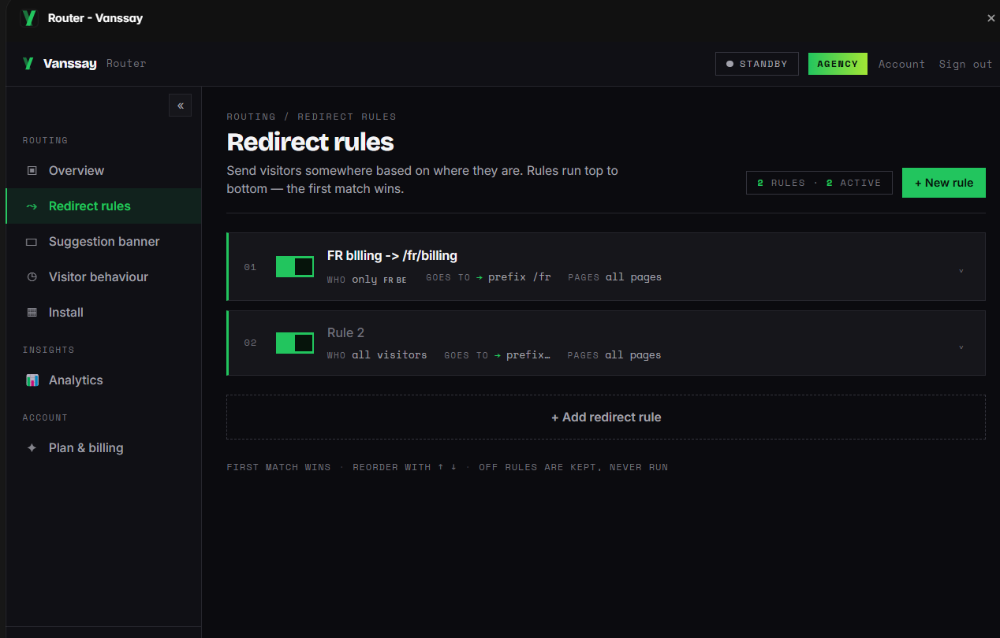
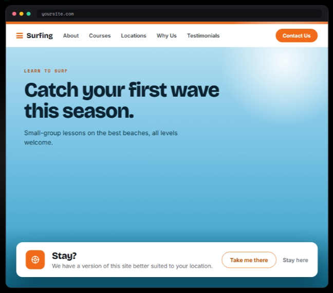

Framer guide
How to redirect Framer visitors by country
A French visitor lands on your English homepage. A US visitor lands on your EU pricing. Geo-redirects fix this, but Framer can't do them natively, and the copy-paste JavaScript hacks come with SEO costs. Here's the right way.
What Framer can and can't do
Framer's built-in redirects map one path to another, static rules, the same for every visitor. Localization gives you translated pages, but nothing routes a visitor to the right one based on where they are. For country-, region- or language-based routing you need logic that runs per visitor.
The JavaScript hack, and why to skip it
The common workaround is custom code: call a free geolocation API, then window.location = …. It works in a demo and degrades in production: the original page flashes before the jump, free geo APIs rate-limit right when traffic spikes, and, worst, forced client-side redirects are exactly what Google's internationalization guidance warns against. Googlebot crawls mostly from US IPs; if every US visit gets bounced, that's what gets crawled, and your other versions suffer.
The SEO-safe pattern: suggest, don't force
Google's own recommendation is to let visitors (and crawlers) reach any version, and suggest the better one. That's the pattern Router implements for Framer:
- Install Router from the Framer marketplace.
- Create rules: country, region, browser language, VPN status or device → target page. France →
/fr, DACH →/de, Spanish speakers →/es. - Pick the behaviour per rule: a polite suggestion banner ("It looks like you're in France, switch to the French page?") or an instant redirect where forcing genuinely fits.
- Publish. Detection is server-side, no flash of the wrong page, no API keys in your source, and rules update without republishing.


Redirecting vs. blocking
Redirects and blocks solve different problems: redirect when every visitor has some right destination (language and regional versions), block when certain visitors should see nothing (licensing, compliance, spam). If you're after the second, you want country blocking with Bouncer instead, or both plugins together: route the markets you serve, block the ones you can't.
Common questions
Will the suggestion banner annoy visitors?
It's a small dismissible prompt, and it only appears when the visitor's location or language doesn't match the page they're on. One click accepts, one click dismisses.
Can I combine country and language rules?
Yes, rules can target country, region, browser language, VPN status or device, so you can express things like "German speakers outside DACH → /de".
Does this work with Framer Localization?
Yes, Router just sends visitors to whichever page or locale URL you specify, including Framer's localized paths.
Sources: Google Search Central: locale-adaptive pages · Framer help.